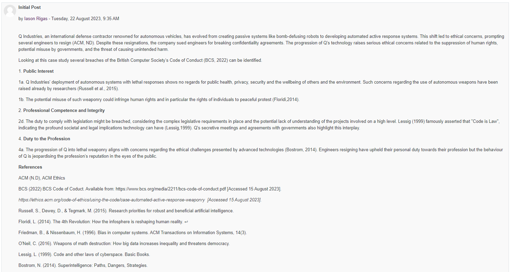

Unit 1 served as an introduction to the
Ethics of Research and the Scientific Method. It included some
historical references and an introduction to the scientific method
involving observation, hypothesis, reasoning and testing. Deductive and
Inductive reasoning was discussed with examples.Unit 1 was the starting point of the collaborative learning discussion.
Pick a case study from the examples provided by the Association of Computing Machinery (ACM).
Review the application of the ethics
code to the situation described and highlight the impact on any
relevant legal (jurisdictional or non-jurisdictional) and social
issues, as well as on the professionalism of the computing
professionals involved. You should provide comparisons to the British
Computer Society (BCS) Code of Conduct.
You should demonstrate that you
understand the topic covered and ensure you use references to academic
literature (including journals, books, and reports). This activity will
provide evidence of your personal growth and your summary post is
required in your e-portfolio.
For the collaborative activity I chose the case study of autonomous defence weapons out of interest for the military and security field as well as artificial intelligence. To make my analysis more structured I took the BCS code and looked into it line by line analysing which provisions have been violated by the company. This is not necessarily an easy exercise as an act might be in breach of more than one rules or might be breaching a rule indirectly.
